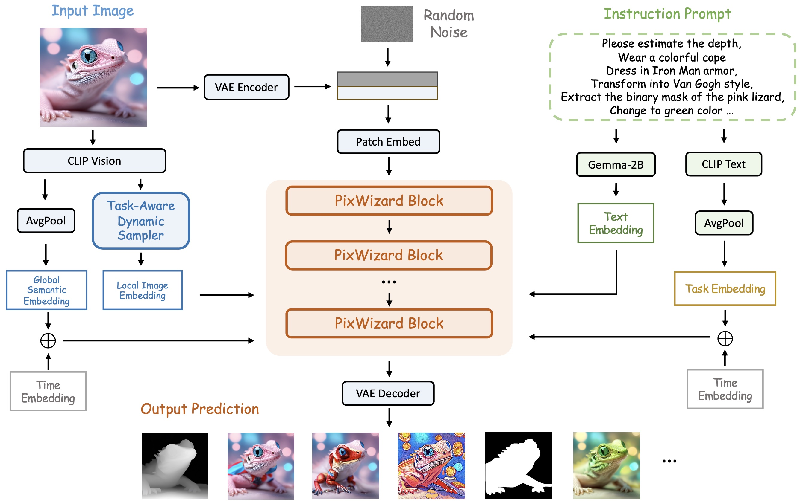
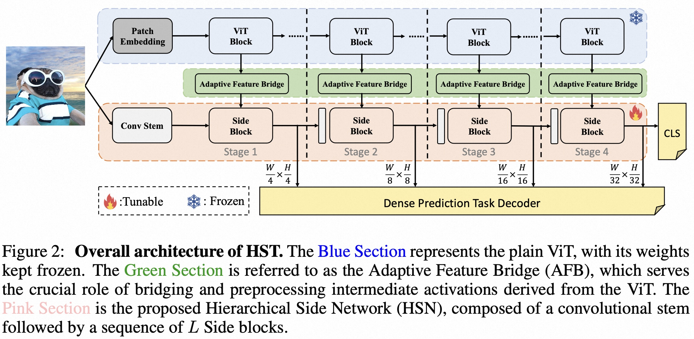
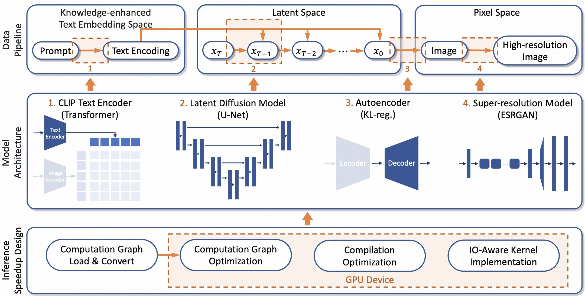

|

|
PixWizard: Versatile Image-to-Image Visual Assistant with Open-Language Instructions
Weifeng Lin,
Xinyu Wei,
Renrui Zhang,
Le Zhuo,
Shitian Zhao,
Siyuan Huang,
Junlin Xie,
Yu Qiao,
Peng Gao,
Hongsheng Li
arxiv Preprint, 2024
[Paper] |
[Code]
Keywords: Image Generation, Image-to-Image, Instruction-based Visual Assistant
|
|

|
Hierarchical Side-Tuning for Vision Transformers
Weifeng Lin,
Ziheng Wu,
Jiayu Chen,
Wentao Yang,
Mingxin Huang,
Jun Huang,
Lianwen Jin,
arxiv, 2023
[paper]
[Code]
Parameter-efficient transfer learning for vision Transformers in various vision tasks (classification, detection, segmentation)
|
|

|
Rapid Diffusion: Building Domain-Specific Text-to-Image Synthesizers with Fast Inference Speed
Bingyan Liu,
Weifeng Lin,
Zhongjie Duan,
Chengyu Wang,
Ziheng Wu,
Zipeng Zhang,
Kui Jia,
Lianwen Jin,
Cen Chen
Jun Huang
Annual Meeting of the Association for Computational Linguistics (ACL-Industry), 2023
[paper]
Rapid Diffusion is a novel framework for training and deploying superresolution,
text-to-image latent diffusion models with rich entity knowledge injected and optimized networks.
|
|
|
Alibaba Cloud
Research Intern, Machine Learning - Deep Learning Algorithms.
|
|
{kind=link}